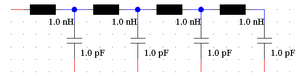

|
|
|
The following script creates the circuit shown in the image below:

'Creates an LC circuit with 4 inductors and 4 capacitors
Sub Main
Dim blockName As String, blockType As String
Dim x, y, angle, I As Integer
For I=1 To 8
'I is odd: Inductor
'I is even: Capacitor rotated by 90°
If I Mod 2 Then
blockName = "Inductor" + CStr((I+1)/2)
blockType = "CircuitBasic\Inductor"
x = 1000+(I-1)/2*250
y = 1000
angle = 0
Else
blockName = "Capacitor" + CStr(I/2)
blockType = "CircuitBasic\Capacitor"
x = x+125
y = 1150
angle = 90
End If
With Block
.Reset
.Type blockType
.Name blockName
.Position (x,y)
.Create
If angle Then .Rotate (angle)
End With
'Connection lines
With Net
If I > 1 Then
If ((I Mod 2) = 1) Then
Dim net1(2,2) As Variant
'Connection of two inductors and a capacitor
.Reset
net1(0,0) = "BLOCK"
net1(0,1) = blockName
net1(0,2) = 0
net1(1,0) = "BLOCK"
net1(1,1) = "Capacitor" + CStr((I-1)/2)
net1(1,2) = 0
net1(2,0) = "BLOCK"
net1(2,1) = "Inductor" + CStr((I-1)/2)
net1(2,2) = 1
.AddComponentPorts("", net1, False)
.Apply
End If
End If
End With
Next I
With Net
Dim net2(1,2) As Variant
'Connection of last inductor and a capacitor
.Reset
net2(0,0) = "BLOCK"
net2(0,1) = "Inductor" + CStr((I-1)/2)
net2(0,2) = 1
net2(1,0) = "BLOCK"
net2(1,1) = "Capacitor" + CStr((I-1)/2)
net2(1,2) = 0
.AddComponentPorts("", net2, False)
.Apply
End With
End Sub